TS-022: Shared mailbox opens but cannot send from it
Resolved an Exchange Online shared mailbox fault in which the user retained Full Access but could not send as the mailbox. Service Desk reproduced and isolated the permission gap, a privileged administrator restored Send As access, and delivery was validated before closure.
Scenario
Kate Jones could open the Sales shared mailbox but could not send messages from sales@nietz.co.uk. This indicated that mailbox access and sending permissions needed to be checked separately.
ServiceNow Ticket
The incident was assigned to Chloe Bennett in the Service Desk and classified using the relevant service records:
- Category: Microsoft 365
- Subcategory: Exchange Online
- Service: Microsoft 365 Productivity
- Service offering: Shared Mailbox Support
- Configuration item: Exchange Online
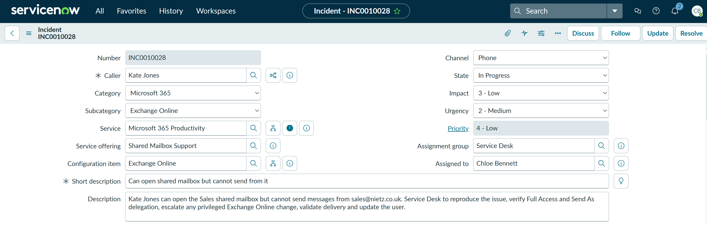
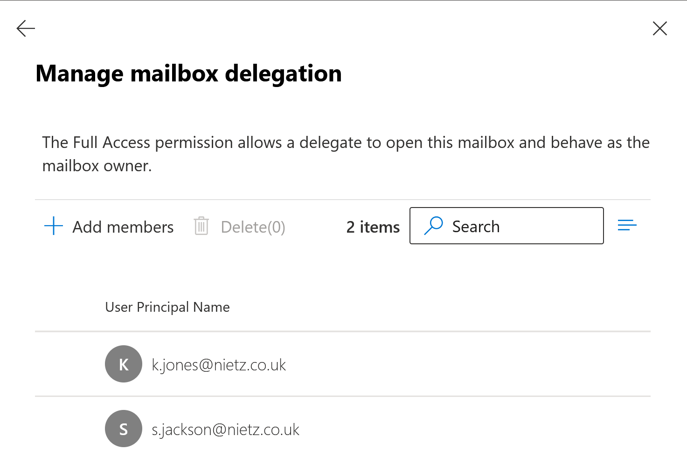
Investigation
Chloe checked the Sales shared mailbox delegation settings. Kate was present under Full Access, which explained why she could open and read the mailbox.
The separate Send As list did not contain Kate. This isolated the fault to the permission required to send messages using the Sales mailbox address.
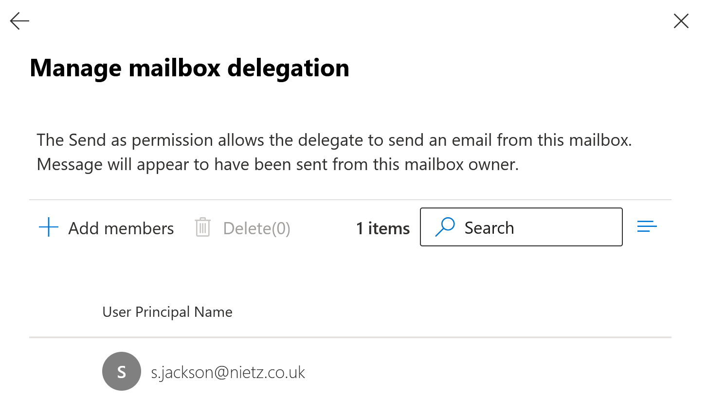
The problem was then reproduced in Outlook on the web. A test message sent from the Sales mailbox returned a clear permission error.
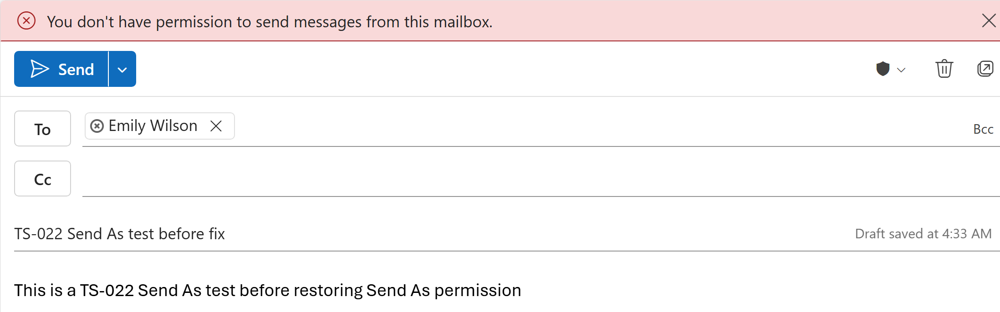
Fix Applied
Because changing shared mailbox delegation was outside the first-line Service Desk permission scope, Chloe documented the completed checks and escalated the incident to Kristian Nietzold for the required Exchange Online change.
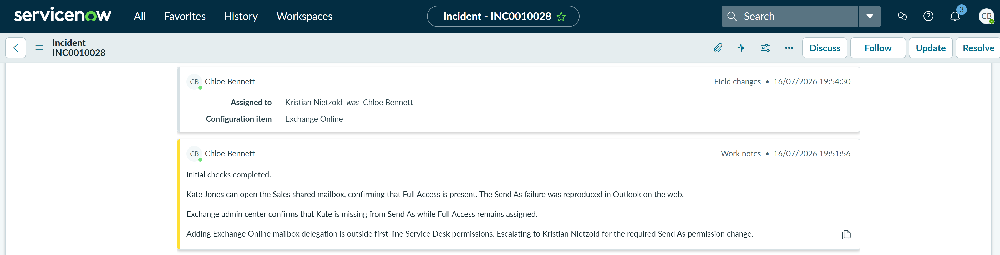
Privileged Change
Kristian added Kate Jones to the Sales mailbox Send As delegation list. Existing Full Access permission was left unchanged.
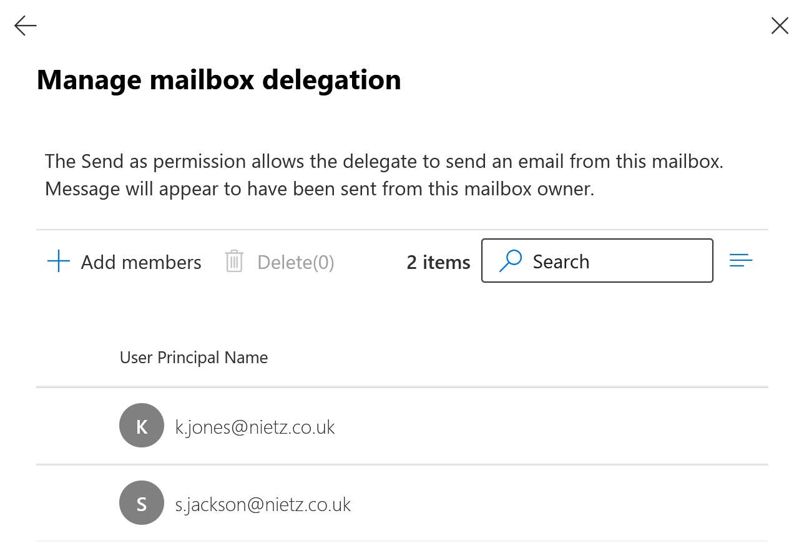
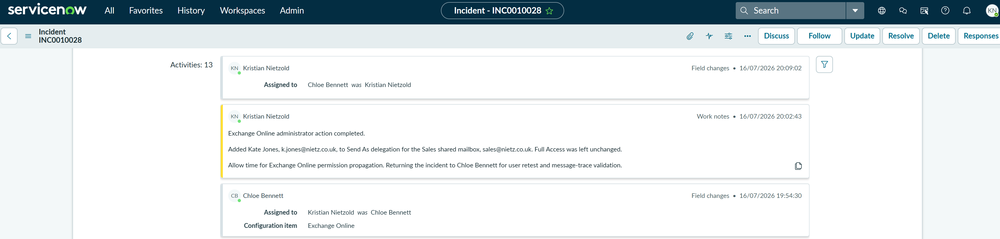
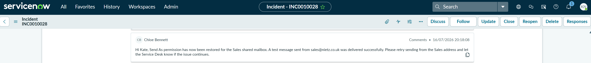
Kristian documented the completed administrator action, allowed time for Exchange Online permission propagation and returned the incident to Chloe for user retesting.
User Communication and Retest
Chloe informed Kate that Send As permission had been restored and asked her to retry sending from the Sales address after the permission refresh.
Validation
A fresh validation message was sent from sales@nietz.co.uk to e.wilson@nietz.co.uk. Exchange message trace showed that the message was received, processed and delivered successfully.
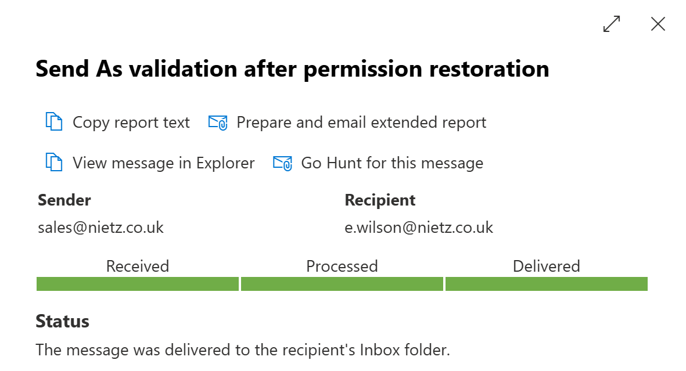
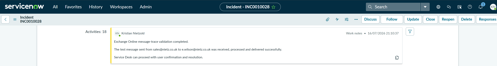
Kristian added a final technical validation note to the incident, confirming the successful message trace and returning the ticket to the Service Desk for closure.
Resolution
Chloe resolved the incident using Solution provided. The resolution notes recorded the original permission mismatch, escalation, administrator change, user retest, successful message trace and user confirmation.
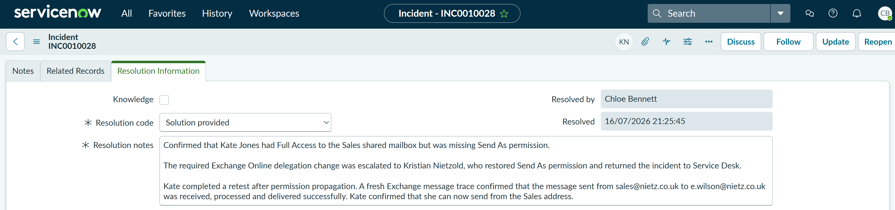
Summary
- Classified a shared mailbox incident using the correct ServiceNow service, offering and configuration item.
- Distinguished Full Access from Send As permission.
- Reproduced the user-facing error in Outlook on the web.
- Documented the first-line findings and escalated the privileged permission change through the approved support path.
- Restored Send As permission without changing existing Full Access.
- Returned ownership to the Service Desk for user communication and closure.
- Validated the fix with a fresh Exchange Online message trace.
- Resolved the ticket with clear, auditable resolution notes.